1004D10 POWER UNIT (MANUAL GEARBOX), REMOVED, DISMANTLE AND REASSEMBLE
- Path
- Procedures > 10 ENGINE > 1004 ENGINE AND POWER UNIT > 1004D REMOVE ENGINE AND WASH > 1004D10 POWER UNIT (MANUAL GEARBOX), REMOVED, DISMANTLE AND REASSEMBLE
- Kind
- repair procedure (removal / refitting; the operation number is the code)
- Applies to
- all engines; all production periods
- Interactive page
- https://sloeber94.github.io/elrnDB-aBrrSpdr/en/#/946001789
Applies to: engines: 3.2 JTS; all production periods
 Removing
Removing
 Refitting
Refitting1. Undo the fastenings and remove the heat shield for the catalytic preconverter for the right head.
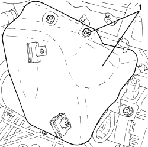
Applies to: engines: 3.2 JTS; all production periods
1. Undo the fastenings and remove the exhaust manifold/catalytic preconverter for the right head complete with Lambda sensor.
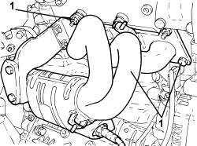
Applies to: engines: 3.2 JTS; all production periods
1. Undo the fastenings and remove the inner heat shield for the catalytic preconverter for the right head.
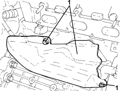
Applies to: engines: 3.2 JTS; all production periods
1. Undo the fastenings and remove the heat shield for the catalytic preconverter for the left head.
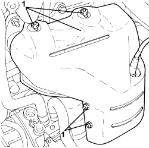
Applies to: engines: 3.2 JTS; all production periods
1. Undo the bolt securing the oil dipstick pipe to the head and remove it.
2. Undo the fastenings and remove the exhaust manifold/catalytic preconverter for the left head complete with Lambda sensor.
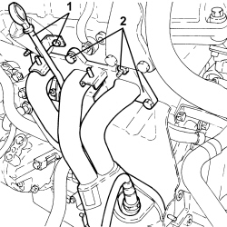
Applies to: engines: 3.2 JTS; all production periods
1. Undo the nuts and disconnect the wiring from the starter motor.
Description | Connector | |
|---|---|---|
1 | Starter motor |
2. Undo the fixing bolts and remove the starter motor.
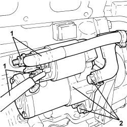
Applies to: engines: 3.2 JTS; all production periods
1. Undo the bolts fixing the gearbox to the engine and remove it.
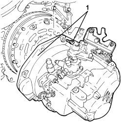
Applies to: engines: 3.2 JTS; all production periods
1. Undo the two bolts fastening the rear drive idler casing and remove it.
- Remove the O-ring from the rear drive idler casing-gearbox flange.
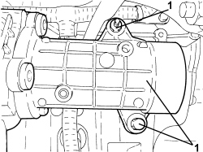
Applies to: engines: 3.2 JTS; all production periods
1. Fit the flywheel lock.
Tool | Description | Function | Validity |
|---|---|---|---|
1860846000 | Counter-torque | Flywheel lock |
2. Unscrew the three bolts spaced at 120 ° securing the clutch mechanism.
3. Fit the locating pin (3a) and the remaining part of tool (3b), tightening the bolts (3c) into the seats of the bolts removed previously.
Tool | Description | Function | Validity |
|---|---|---|---|
1871003100 | Extractor/ fitting tool | Clutch mechanism removal | 3.2 JTS 2.4 JTD 20V |
4. Turn the tool handwheel until the pins (4a) are in contact with the disc (4b).
5. Undo the remaining bolts securing the clutch mechanism.
6. Undo the tool handwheel to discharge the clutch mechanism diaphragm spring.
- Remove the tool.
Tool | Description | Function | Validity |
|---|---|---|---|
1871003100 | Extractor/ fitting tool | Clutch mechanism removal | 3.2 JTS 2.4 JTD 20V |
7. Remove the clutch mechanism.
- Remove the clutch plate.
Applies to: engines: 3.2 JTS; all production periods
1. Undo the bolts and remove the flywheel.
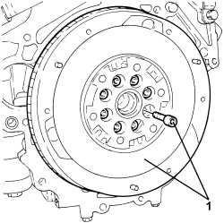
Applies to: engines: 3.2 JTS; all production periods
Refitting
Removing- Place the flywheel in its housing and secure it by tightening the bolts to the recommended torque.
Component | Fastening | dia | Value (daNm) | Validity |
|---|---|---|---|---|
Engine flywheel | Bolt | - | 3.0 + 45° | 3.2 JTS |
1. Fit the tool locating pin into the crankshaft.
2. Refit the clutch mechanism in position.
3. Fit the remaining part of tool (3a) for fitting the clutch device and tighten the bolts (3b).
4. Turn the tool handwheel until the pins (4a) are in contact with the disc (4b).
5. Hand tighten the three free retaining bolts until the clutch device is packed together.
6. Undo the tool handwheel to discharge the clutch mechanism diaphragm spring.
- Remove the tool.
Tool | Description | Function | Validity |
|---|---|---|---|
1871003100 | Extractor/ fitting tool | Clutch mechanism removal | 3.2 JTS 2.4 JTD 20V |
- Tighten the remaining clutch fixing bolts by hand.
- Gradually tighten the bolts fixing the clutch diagonally until the recommended torque is reached.
7. Remove the flywheel lock.
Tool | Description | Function | Validity |
|---|---|---|---|
1860846000 | Counter-torque | Flywheel lock |
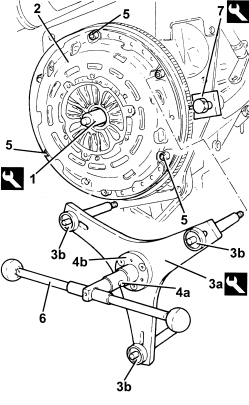
Applies to: engines: 3.2 JTS; all production periods
- Fit a new O-ring on the rear drive idler casing-gearbox flange.
- Position the rear drive idler casing in its housing and secure it tightening the bolts to the recommended torque.
Component | Fastening | dia | Value (daNm) | Validity |
|---|---|---|---|---|
Rear drive idler casing to engine | Bolt | M8 | 2.2 ÷ 2.6 | 3.2 JTS |
Component | Fastening | dia | Value (daNm) | Validity |
|---|---|---|---|---|
Rear drive idler casing to engine | Bolt | M6 | 0.7 ÷ 1.1 | 3.2 JTS |
- Assemble the gearbox and the engine and tighten the bolts to the recommended torque.
Component | Fastening | dia | Value (daNm) | Validity |
|---|---|---|---|---|
Manual gearbox to engine | Bolt | M10 | 5.4 ÷ 6.6 | 3.2 JTS |
Component | Fastening | dia | Value (daNm) | Validity |
|---|---|---|---|---|
Manual gearbox to rear drive idler casing | Bolt | M12 | 10.9 ÷ 12.1 | 3.2 JTS |
- Place the starter motor in its housing and secure it tightening the bolts to the recommended torque.
- Connect the starter motor wiring and secure it using the nuts.
- Place the exhaust manifold/catalytic preconveter for the left head in its housing complete with Lambda sensor and tighten the fastenings.
- Place the oil dipstick pipe back in its housing and fasten it with the bolt.
- Place the heat shield for the catalytic preconverter for the left head in its housing and tighten the fastenings.
- Place the inner heat shield for the catalytic preconverter for the right head in its housing and tighten the fastenings.
- Place the exhaust manifold/catalytic preconveter for the right head in its housing complete with Lambda sensor and tighten the fastenings.
- Place the heat shield for the catalytic preconverter for the right head in its housing and tighten the fastenings.
Applies to: engines: 2.2 JTS; all production periods
Removing
Refitting1. Undo the nuts (1a) and remove the exhaust manifold and catalytic converter (1b).
- Remove the gasket.
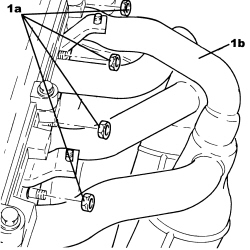
Applies to: engines: 2.2 JTS; all production periods
1. Open the access cover for the electrical connections.
2. Undo the nuts (2a) and disconnect the electrical connections (2b) from the starter motor.
Description | Connector | |
|---|---|---|
2b | Starter motor |
3. Undo the bolts (3a) and remove the starter motor (3b).
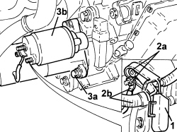
Applies to: engines: 2.2 JTS; all production periods
1. Undo the bolts (1a), (1b) and remove the manual gearbox (1c).
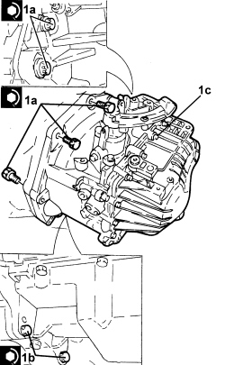
Applies to: engines: 2.2 JTS; all production periods
Refitting
Removing- Make sure that the manual gearbox centering bushes are on the engine block.
- Place the manual gearbox in position and secure it tightening the bolts to the recommended torque.
- Place the starter motor in its housing and secure it tightening the bolts to the recommended torque.
- Connect the electrical connections to the starter motor and secure them using the nuts.
- Close the access cover for the electrical connections.
- Place the exhaust manifold gasket in its housing.
- Place the exhaust manifold and catalytic converter back in its housing and fasten it using the nuts.
- Tighten the bolts fixing the exhaust manifold and the catalytic converter to the mounting bracket.
Applies to: engines: 2.4 JTD 20v; all production periods
Removing
Refitting1. Undo the nuts (1a) and disconnect the electrical connections (1b) from the starter motor.
Description | Connector | |
|---|---|---|
1b | Starter motor |

Applies to: engines: 2.4 JTD 20v; all production periods
1. Undo the bolts (1a) and remove the starter motor (1b).
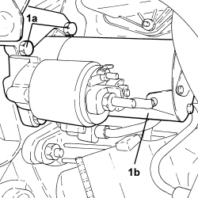
Applies to: engines: 2.4 JTD 20v; all production periods
1. Undo the bolts (1a), (1b) and the nuts (1c) and remove the manual gearbox (1d).
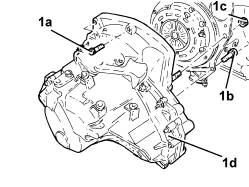
Applies to: engines: 2.4 JTD 20v; all production periods
1. Fit the flywheel lock.
Tool | Description | Function | Validity |
|---|---|---|---|
1860846000 | Counter-torque | Flywheel lock |
2. Unscrew the three bolts spaced at 120° securing the clutch cradle.
3. Fit the locating pin (3a) and the remaining part of tool (3b), tightening bolts (3c) into the sockets of the bolts removed previously.
Tool | Description | Function | Validity |
|---|---|---|---|
1871003100 | Extractor/ fitting tool | Clutch mechanism removal | 3.2 JTS 2.4 JTD 20V |
4. Turn the tool handwheel until pins (4a) are in contact with disc (4b).
6. Undo the tool handwheel to discharge the clutch mechanism diaphragm spring.
- Remove the tool.
Tool | Description | Function | Validity |
|---|---|---|---|
1871003100 | Extractor/ fitting tool | Clutch mechanism removal | 3.2 JTS 2.4 JTD 20V |
7. Remove the clutch tray.
- Remove the clutch plate.

Applies to: engines: 2.4 JTD 20v; all production periods
Refitting
Removing1. Fit the tool locating pin into the crankshaft.
2. Refit the clutch mechanism in position.
3. Fit the remaining part of tool (3a) for fitting the clutch device and tighten bolts (3b).
4. Turn the tool handwheel until pins (4a) are in contact with disc (4b).
5. Hand tighten the three free retaining bolts until the clutch device is packed together.
6. Undo the tool handwheel to discharge the clutch mechanism diaphragm spring.
- Remove the tool.
Tool | Description | Function | Validity |
|---|---|---|---|
1871003100 | Extractor/ fitting tool | Clutch mechanism removal | 3.2 JTS 2.4 JTD 20V |
- Tighten the remaining clutch fixing bolts by hand.
- Gradually tighten the bolts fixing the clutch diagonally until the recommended torque is reached.
Component | Fastening | dia | Value (daNm) | Validity |
|---|---|---|---|---|
Clutch drip tray | Bolt (pretreated to be replaced) | M8 | (Engine flywheel side) 2.8 | 2.4 JTD 20V |
7. Remove the flywheel lock.
Tool | Description | Function | Validity |
|---|---|---|---|
1860846000 | Counter-torque | Flywheel lock |

Applies to: engines: 2.4 JTD 20v; all production periods
1. Place the manual gearbox (1a) in its housing and secure it tightening the bolts (1b) and (1c) and the nuts (1d) to the recommended torque.
Component | Fastening | dia | Value (daNm) | Validity |
|---|---|---|---|---|
Manual gearbox | Bolt | M12 | 4.8 ÷ 7.2 | 2.4 JTD 20V |
Component | Fastening | dia | Value (daNm) | Validity |
|---|---|---|---|---|
Manual gearbox | Bolt | M10 | 3.6 ÷ 4.4 | 2.4 JTD 20V |
Component | Fastening | dia | Value (daNm) | Validity |
|---|---|---|---|---|
Manual gearbox | Nut | M12 | 4.8 ÷ 7.2 | 2.4 JTD 20V |

Applies to: engines: 2.4 JTD 20v; all production periods
1. Place the starter motor (1a) in its housing and secure it tightening the bolts (1b) to the recommended torque.
Component | Fastening | dia | Value (daNm) | Validity |
|---|---|---|---|---|
STARTER MOTOR | Bolt | M8x45 | 2.2 ÷ 2.6 |

Applies to: engines: 2.4 JTD 20v; all production periods
- Connect the electrical connections to the starter motor and secure them using the nuts.
Topics linked from this page (1)
Topics that link to this page (34)
- 1016D10 CYLINDER HEAD – R.R. AND REPLACE GASKETS
- 1016D14 CYLINDER HEADS - R + R AND REPLACE GASKETS WITH ENGINE REMOVED
- 1016D20 LEFT CYLINDER HEAD - R.R. AND REPLACE GASKET
- 1016D22 LEFT HAND CYLINDER HEAD -R+R AND REPLACE GASKET WITH ENGINE REMOVED
- 1016D24 RIGHT CYLINDER HEAD - R.R. AND REPLACE GASKET
- 1016D26 RIGHT HAND CYLINDER HEAD - R+R AND REPLACE GASKET WITH ENGINE REMOVED
- 1020A20 CRANKCASE OIL SUMP - R.R CLEAN SURFACES FOR SEALANT APPLICATION
- 1020A24 CRANKCASE OIL SUMP - R.R CLEAN SURFACES FOR SEALANT APPLICATION WITH ENGINE OR INTERFERING COMPONENTS REMOVED
- 1020D14 FRONT CRANKSHAFT OIL SEAL COVER - R.R AND REPLACE SEALS FOR VERSIONS WITH OIL PUMP ON CRANKSHAFT, TIMING SIDE
- 1020D38 FLYWHEEL SIDE OIL SEAL - REPLACE
- 1024B10 ENGINE FLYWHEEL - R + R FOR VERSIONS WITH MANUAL GEARBOX
- 1024B22 ENGINE FLYWHEEL - R.R WITH CLUTCH REMOVED FOR VERSIONS WITH MANUAL GEARBOX
- 1028H10 CONNECTING ROD AND PISTON SET - R.R
- 1028H20 PISTON WITH CONNECTING ROD - R.R
- 1032A10 CHAIN GEARS AND TIMING SYSTEM COMPONENTS R R
- 1032A12 TIMING SYSTEM DRIVE CHAIN - R.R
- 1032C18 TIMING BELT MOVING TENSIONER - R.R.
- 1032C20 LEFT MOVING TIMING TENSIONER - R.R.
- 1032C24 RIGHT MOVING TIMING TENSIONER - R.R.
- 1032C36 LEFT FIXED TIMING TENSIONER - R.R.
- 1032C38 RIGHT FIXED TIMING TENSIONER - R.R.
- 1036E10 CAMSHAFTS FOR LEFT CYLINDER HEAD - R.R. ON VEHICLE
- 1036E14 CAMSHAFTS FOR RIGHT CYLINDER HEAD - R.R. ON VEHICLE
- 1036E18 CAMSHAFTS FOR LEFT OR RIGHT CYLINDER HEAD - R.R. ON VEHICLE
- 1036E20 CAMSHAFT FOR ONE CYLINDER HEAD, LEFT OR RIGHT - R.R. WITH CYLINDER HEAD REMOVED
- 1056F94 SYSTEM CABLE LOOM ON ENGINE - R.R.
- 1084B12 ENGINE OIL PUMP - R+R
- 1810A20 CLUTCH - R + R
- 1810A24 CLUTCH - R + R WITH GEARBOX REMOVED
- 1820B30 CLUTCH HYDRAULIC ACTUATOR - R.R.
- 2110A10 MANUAL GEARBOX AND DIFFERENTIAL - R + R
- 2110E10 TRANSFER CASE FOR REAR TRACTION - R.R.
- 5510C26 ENGINE RPM SENSOR - R+R
- 5510C45 DETONATION SENSOR (ONE REMAINING) - R.R. FOLLOWING OP.5510C44